Công cụ hình thái học mức xám chủ yếu được dùng để xử lý hình ảnh đầu vào bằng các phép toán hình thái học mức xám. Các thao tác được hỗ trợ bao gồm giãn, co, mở, đóng, biến đổi Top-Hat trắng, biến đổi Top-Hat đen, gradient hình thái học, và lọc trung vị.
Áp dụng xử lý hình thái học mức xám cho hình ảnh đầu vào.
Công cụ hình thái học mức xám hỗ trợ 8 loại thao tác: giãn mức xám, co mức xám, mở mức xám, đóng mức xám, biến đổi Top-Hat trắng, biến đổi Top-Hat đen, gradient hình thái học, và lọc trung vị.
Giãn và Co: Giãn giúp mở rộng vùng sáng trong ảnh, thu nhỏ vùng tối; Co giúp thu nhỏ vùng sáng và mở rộng vùng tối.
Mở và Đóng: Mở là thực hiện co rồi giãn, giúp loại bỏ các chi tiết hoặc vùng nhỏ sáng; Đóng là thực hiện giãn rồi co, giúp loại bỏ các chi tiết hoặc vùng nhỏ tối.
Biến đổi Top-Hat trắng và đen: Biến đổi Top-Hat trắng là lấy ảnh gốc trừ ảnh sau khi mở, giúp làm nổi bật chi tiết sáng nhỏ hơn phần tử cấu trúc; Biến đổi Top-Hat đen là lấy ảnh sau khi đóng trừ ảnh gốc, giúp làm nổi bật chi tiết tối nhỏ hơn phần tử cấu trúc.
Gradient hình thái học: Là phép trừ ảnh giãn và ảnh co, có thể giữ lại biên của ảnh.
Lọc trung vị: Thay thế giá trị của mỗi điểm ảnh bằng giá trị trung vị của vùng lân cận (vùng có điểm ảnh làm tâm), dùng để khử nhiễu, lọc thông thấp cho ảnh.
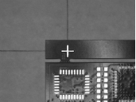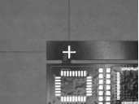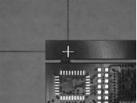
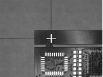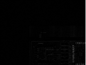
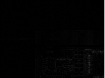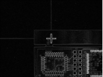
1. Liên kết chuỗi tham số
2. Thiết lập thuộc tính
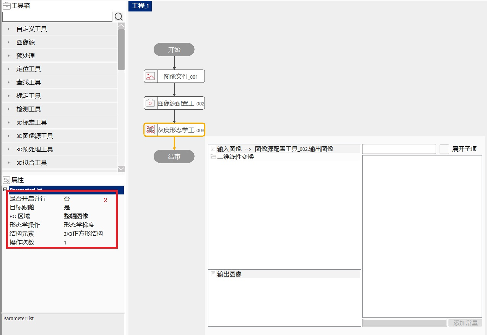!
Trong các thao tác hình thái học mức xám, phần tử cấu trúc tương tự như bộ lọc trong xử lý ảnh. Ngoài các phần tử cấu trúc được định nghĩa sẵn như trong Hình 2, công cụ còn hỗ trợ phần tử cấu trúc có kích thước N×M. Riêng đối với lọc trung vị, kích thước tối đa được hỗ trợ là 99×99.
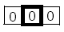 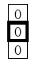 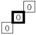
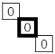 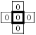 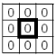
Khi thao tác hình thái học được chọn là lọc trung vị, tham số phần tử cấu trúc sẽ không còn hiệu lực.
| Tên tham số | Giải thích tham số |
|---|---|
| Bật song song | Có: bật tối ưu hóa song song; Không: không bật tối ưu hóa song song |
| Theo dõi mục tiêu | Có: có thể kết nối biến đổi tuyến tính 2D; Không: thực hiện công cụ theo vùng ROI được liên kết |
| Vùng ROI | Vùng công cụ thực hiện kiểm tra, gồm 10 loại: toàn bộ ảnh, ROI hình chữ nhật, ROI hình chữ nhật biến đổi, ROI hình tròn, ROI hình vòng (cung), ROI hình elip, ROI hình đa giác, ROI polyline biến đổi, ROI hình tự do và ROI đa vùng. |
| Phép toán hình thái học | Các phép toán hình thái học mức xám được hỗ trợ gồm 8 loại: giãn xám, xói xám, mở xám, đóng xám, biến đổi Top-Hat trắng, biến đổi Top-Hat đen, gradient hình thái, lọc trung vị. |
| Phần tử cấu trúc | Có hình dạng nhất định, dùng để đo lường và trích xuất hình dạng tương ứng trong ảnh nhằm phục vụ phân tích và nhận dạng đặc điểm cấu trúc ảnh. Khi chọn loại phần tử là hình tròn bán kính r, các tham số như bán kính r và nhị phân hóa ảnh đầu vào sẽ xuất hiện. |
| Số lần thao tác | Số lần thực hiện xử lý hình thái học mức xám trên ảnh đầu vào; ảnh kết quả của lần trước sẽ làm đầu vào cho lần kế tiếp. |
| Ảnh đầu vào | Ảnh cần xử lý. |
| Tên tham số | Giải thích tham số |
|---|---|
| Ảnh đầu vào | Chiều rộng, chiều cao và kích thước điểm ảnh của ảnh đầu vào. |
| Ảnh đầu ra | Chiều rộng, chiều cao và kích thước điểm ảnh của ảnh đầu ra. |
| Kết quả thực thi | Kết quả thực thi của công cụ. |
| Thời gian thực thi | Thời gian thực hiện công cụ. |
参见“\Samples\灰度形态学工具.gvp”。